UC classification (RNAseq datasets)
Czarnewski et al 2019
Paulo Czarnewski
30 May 2019
1 Load Packages
#Source my custom functions
source("support_functions.R")
#Install and load packages
inst_packages(c("annotate","hgu133plus2.db","Biobase","Rtsne","GEOquery","rafalib","multcomp","RColorBrewer","preprocessCore","data.table","limma","pheatmap","ROCR","epitools","beeswarm","EDASeq","vioplot","caret","pROC","e1071","sva","car","edgeR","enrichR"))
#Define color pallete
pallete <- c(brewer.pal(8,"Set2"),brewer.pal(9,"Set1"))[2:8]
pallete2 <- c(brewer.pal(8,"Set2"),brewer.pal(9,"Set1"))
color <- colorRampPalette(c("gray","red","blue"))(10)
#homologs <- fread('http://www.informatics.jax.org/downloads/reports/HMD_HumanPhenotype.rpt')
#homologs <- data.frame("mouse"=homologs$V5,"human"=homologs$V1)
homologs <- read.csv("../processed_files/homologs.csv",row.names = 1)2 Loading Human dataset
For some reason, the data deposited in this dataset could not be obtained directly using the getGEO function, only the metadata could be obtained this way. Therefore, we downloaded the raw count files from the dataset into a folder and joined them manually. They also added a pseudocount of 0.01 to all values to avoid problems with log transformations, so we removed it in our anlaysis.
#Importing samples from GSE109142
GSE109142_meta <- pData(getGEO("GSE109142",GSEMatrix =TRUE)[[1]])
GSE109142_meta <- GSE109142_meta[GSE109142_meta$`diagnosis:ch1` == "Ulcerative Colitis",]
files <- list.files("~/Downloads/GSE109142_RAW/")
for(i in GSE109142_meta$geo_accession){
cat("processing sample ",i,"...\n")
temp <- read.delim(paste0("~/Downloads/GSE109142_RAW/",files[grep(i,files)]),row.names = 1)
if(i == GSE109142_meta$geo_accession[1]){
dataGSE109142 <- temp
} else{
dataGSE109142 <- cbind(dataGSE109142,temp)
}}
colnames(dataGSE109142) <- GSE109142_meta$geo_accession
dataGSE109142 <- dataGSE109142-0.013 Loading Human dataset
dataGSE109142 <- read.csv("../downloaded/rawdataGSE109142.csv",row.names = 1)
#Merge data and remove 0 counts
data <- as.matrix(dataGSE109142)
sel <- apply(data,1,function(x) sum(x > 5) > ncol(data)*0.1 )
data <- data[sel,]
#data <- log2(data+1)
head(data)
#Merge metadata
phenotData <- GSE109142_meta
Group <- phenotData$`week 4 remission:ch1`
phenotData[1,]4 Perfoming initial Exploratory data Anlaysis
Since we observe a strong batch effect due to sex differences, we corrected it using ComBat
#Correcting sample-wise data distribution
mypar(1,1)
shist(data,col="red")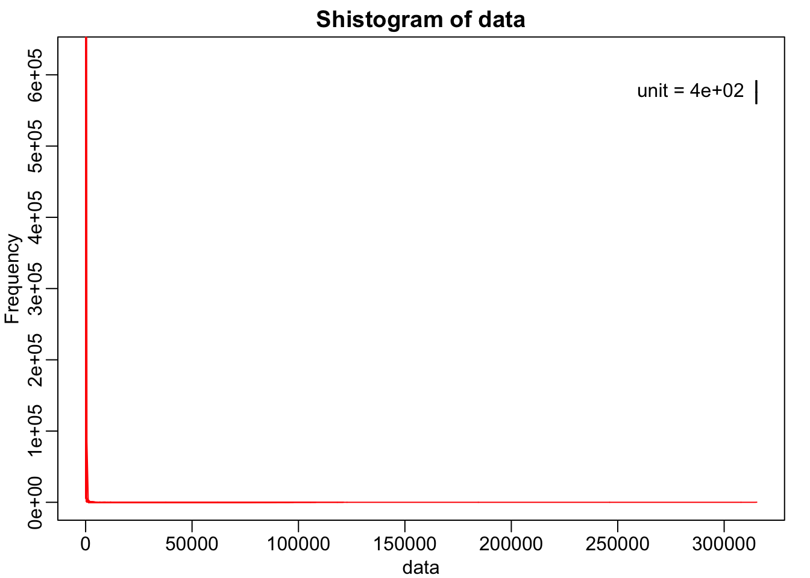
plotRLE(data,outline=F,xaxs="i",col="red",lty=1,border="grey", main=paste0("RLE"),las=2,cex.axis=0.5,cex.main=0.8,cex=0.1,pch=16,ylim=c(-0.5,0.5))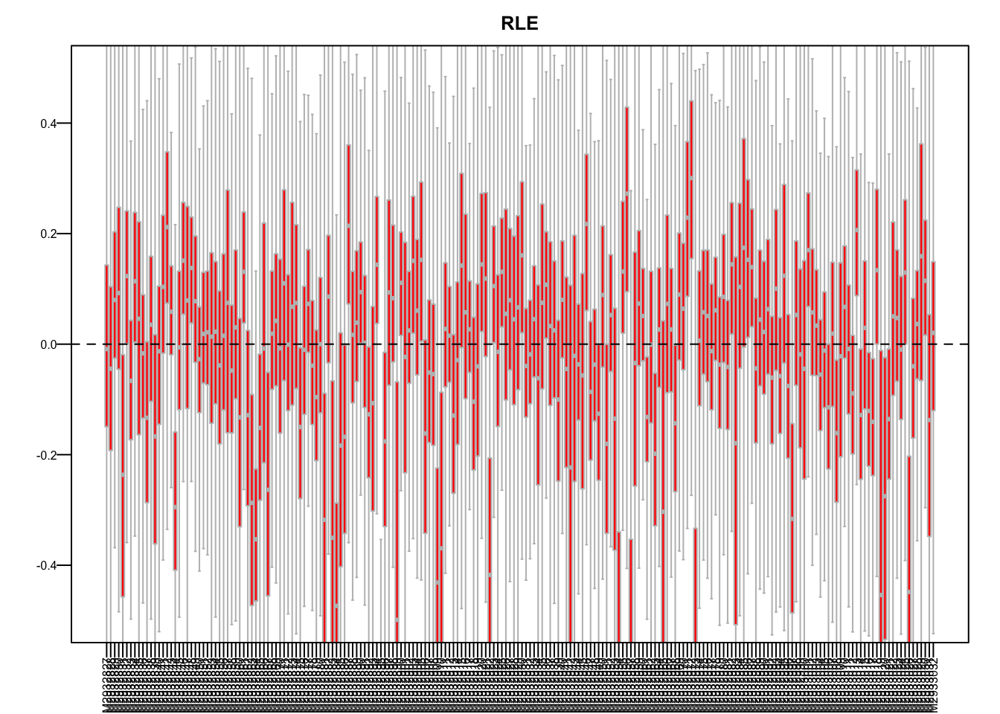
modCombat <- model.matrix(~1,data=phenotData)
combat_edata <- ComBat(dat=data,batch=phenotData$`Sex:ch1`,mod=modCombat)
combat_edata[combat_edata<0] <- 0
y <- DGEList(counts=combat_edata, modCombat,remove.zeros = T)
y <- calcNormFactors(y,method = "TMM")
y <- estimateCommonDisp(y)
normcounts <- cpm(y, log = T, prior.count = 1, normalized.lib.sizes = T)
raw_data <- data
data <- normcounts
shist(data,col="red")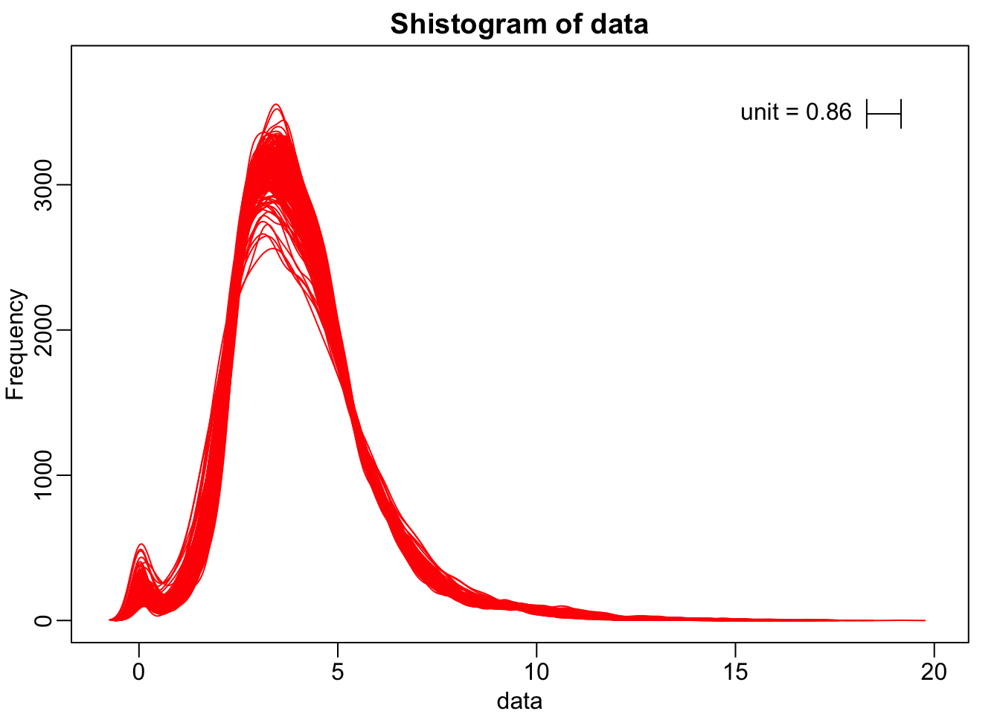
plotRLE(data,outline=F,xaxs="i",col="red",lty=1,border="grey", main=paste0("RLE"),las=2,cex.axis=0.5,cex.main=0.8,cex=0.1,pch=16,ylim=c(-0.5,0.5))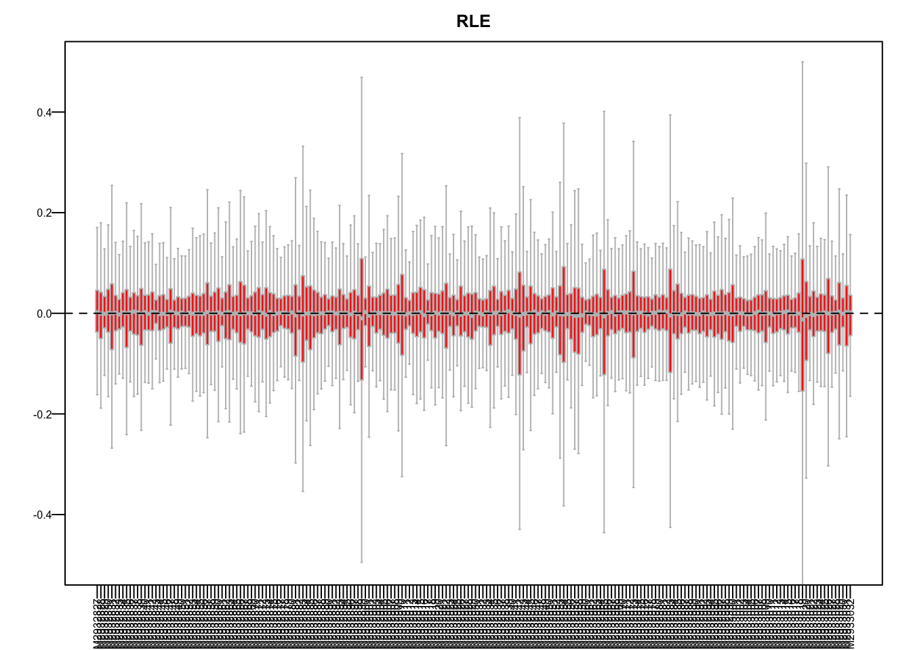
#plotMDS(ndata,pch=16,col="red")5 Load plot series function
Here, we created a series of plots to explore the data with ease. Therefore, we can simply source that function.
source("plot_functions.R")6 Selecting the top variable genes
rowVAR <- apply(data,1,function(x){var(x)})
top_rowVAR <- sort(rowVAR,decreasing = T)[1:100]
VAR_select <- names(top_rowVAR)
d_VAR <- data[VAR_select,]
a<- suppressWarnings(plot_series(d_VAR))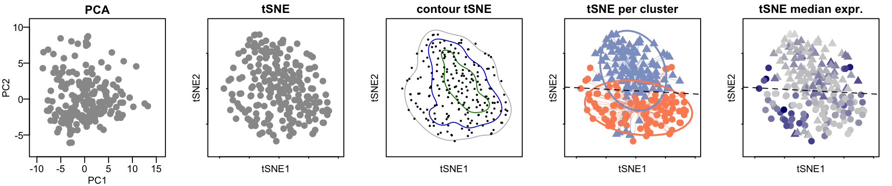
7 Selecting the top CV genes
rowCV <- apply(data,1,function(x){var(x)/mean(x)})
top_rowCV <- sort(rowCV,decreasing = T)[1:100]
CV_select <- names(top_rowCV)
d_CV <- data[CV_select,]
a<- suppressWarnings(plot_series(d_CV))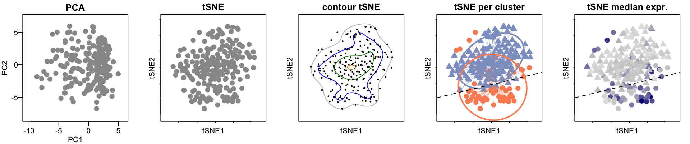
8 Using MOUSE PC1 and PC2 together to separate
n <- 100
PC1 <- as.matrix(read.csv(paste0("/Users/Czarnewski/Box Sync/Paulo_data/20160808 - RNAseq data from DSS and Citrobacter kinetics/20170825-Heatmap cluster GO-enrichment DSS 9 clusters/Leading genes PC1.csv"),row.names = 1))
PC2 <- as.matrix(read.csv(paste0("/Users/Czarnewski/Box Sync/Paulo_data/20160808 - RNAseq data from DSS and Citrobacter kinetics/20170825-Heatmap cluster GO-enrichment DSS 9 clusters/Leading genes PC2.csv"),row.names = 1))
PC_genes <- unique(c(rownames(PC1)[1:n],rownames(PC2)[1:n]))
h_PC <- homologs[homologs[,1] %in% PC_genes,]
h_PC <- sort(unique(as.vector(h_PC[,2])))
cPC <- data[h_PC[h_PC %in% rownames(data)],]
suppressWarnings(a <- plot_series(cPC))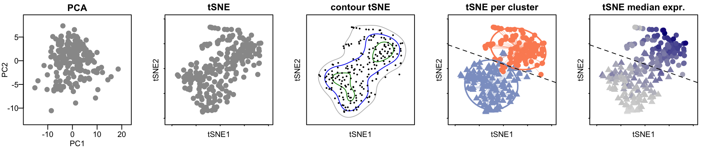
t_data <- cPC
UC_subtype <- classify(cPC)9 Plotting genes from mouse PC
mypar(1,10,mar = c(0.1,0.1,0.1,0.1))
set.seed(123)
tSNE <- Rtsne(t(data),perplexity = 30,pca = T,max_iter = 1000,theta = 0.0)
#UC_subtype <- classify(t_data)
plot(a[,1],a[,2],col=pallete[UC_subtype])
model <- glm(UC_subtype~a,family="binomial")
slope <- coef(model)[2]/(-coef(model)[3])
intercept <- coef(model)[1]/(-coef(model)[3])
#Sort genes by absolute fold-change
ordered_list <- sort(apply(t_data,1,function(x) abs(mean(x[UC_subtype==levels(UC_subtype)[1]]) - mean(x[UC_subtype==levels(UC_subtype)[2]])) ),decreasing = T)
for(i in names(ordered_list)){
grad <- (t_data[i,] - quantile(t_data[i,],.05)) / (quantile(t_data[i,],.95) - quantile(t_data[i,],.05))
grad[grad < 0] <- 0; grad[grad > 1] <- 1
plot(a[,1],a[,2],cex=1,las=1,xaxt="n",yaxt="n",col=colorRampPalette(c("grey90","grey80","navy"))(50)[grad*49+1],pch=as.numeric(UC_subtype)+15,line=.5,xlab="", ylab="",xlim=c(min(a[,1])*out,max(a[,1])*out),ylim=c(min(a[,2])*out,max(a[,2])*out),main=i)
axis(side = 1, labels = FALSE, tck = -0.01);axis(side = 2, labels = FALSE, tck = -0.01)
text(min(a[,1])*out,max(a[,2])*out,i,adj=0,cex=1)
abline(c(intercept,slope),lty=2)}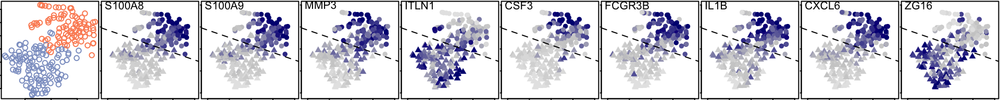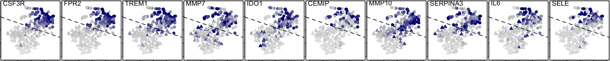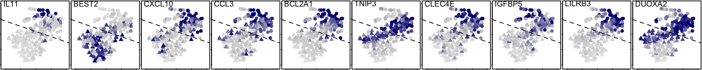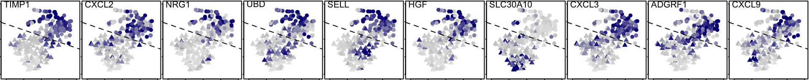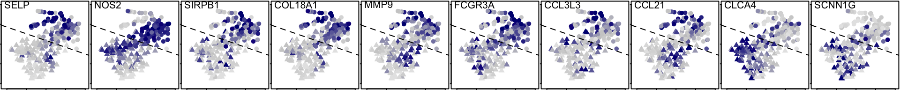 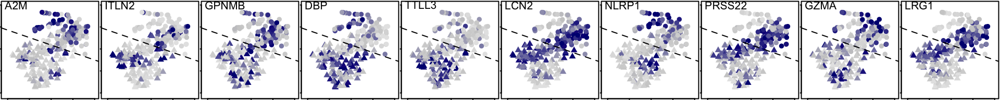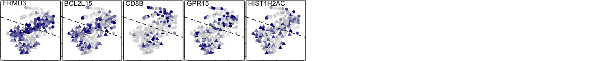
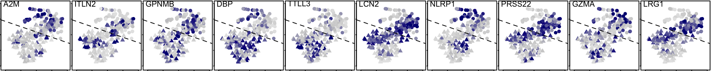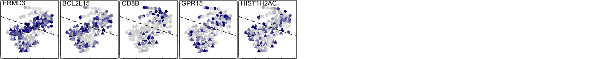
mypar(3,5)
par(mar=c(2,2.5,2,3))
plot(tSNE$Y[,1],tSNE$Y[,2],cex=1.5,las=1,xaxt="n",yaxt="n",col=c("grey","darkgreen")[Group],pch=as.numeric(UC_subtype)+15,line=.5,xlab="tSNE1", ylab="tSNE2",xlim=c(min(tSNE$Y[,1])*out,max(tSNE$Y[,1])*out),ylim=c(min(tSNE$Y[,2])*out,max(tSNE$Y[,2])*out),main="tSNE resp. to IFX")
axis(side = 1, labels = FALSE, tck = -0.01);axis(side = 2, labels = FALSE, tck = -0.01)
abline(intercept,slope,lty=2)
temp <- sapply(levels(UC_subtype),function(x) sum(as.character(Group[as.character(UC_subtype)==x])=="Yes")/sum(as.character(UC_subtype)==x)*100 )
barplot(temp,ylim=c(0,100),las=1,col=pallete[1:length(levels(UC_subtype))],ylab="% response to IFX")
abline(h=0,lwd=3)
barplot(100-temp,ylim=c(0,100),las=1,col=pallete[1:length(levels(UC_subtype))],ylab="% refractory to IFX")
abline(h=0,lwd=3)
barplot(rbind(temp,100-temp),ylim=c(0,100),las=1,col=c("dark green","pink"),ylab="% refractory to IFX",border=0)
abline(h=0,lwd=3)
plot(c(0,1),c(0,1),type="n",axes=F,xlab="",ylab="")
legend(0,1,c("resp.","non-resp."),pch=15,pt.cex = 2,col =c("dark green","pink"),box.lwd = 0)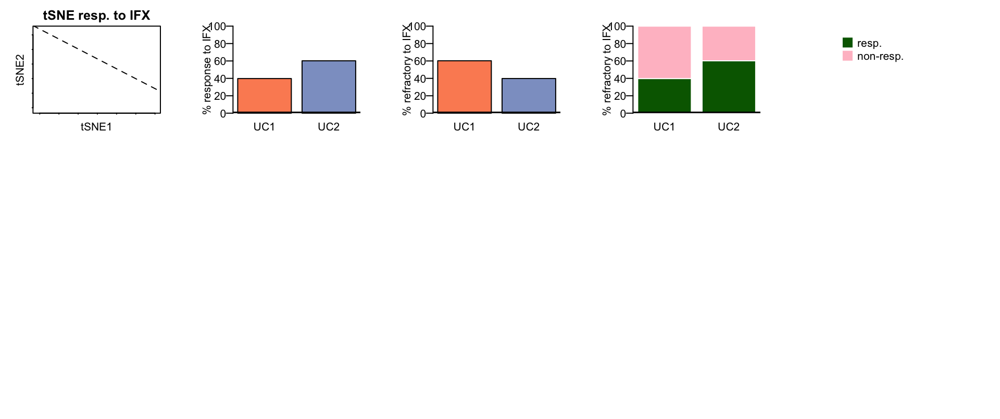
10 Plotting metadata from UC1 vs UC2
mypar(1,7)
par(mar=c(2,2.5,2,3))
temp <- sapply(levels(UC_subtype),function(x) sum(as.character(phenotData$`Sex:ch1`[as.character(UC_subtype)==x])=="Male")/sum(as.character(UC_subtype)==x)*100 )
barplot(rbind(temp,100-temp),ylim=c(0,100),las=1,col=c("cyan4","pink2"),ylab="% refractory to IFX",border=0)
abline(h=0,lwd=3)
plot(c(0,1),c(0,1),type="n",axes=F,xlab="",ylab="")
legend("topleft",c("Male","Female"),pch=15,pt.cex = 2,col =c("cyan4","pink2"),box.lwd = 0)
rvar <- runif(n = length(UC_subtype),-.15,.15)
boxplot(as.numeric(phenotData$`histology severity score:ch1`) ~ UC_subtype,border="grey",outline=F,col=paste0(pallete[1:2],10),ylim=c(0,5),las=1,ylab="histology severity score",main="Histological Score")
beeswarm(as.numeric(phenotData$`histology severity score:ch1`)+runif(n = length(UC_subtype),-.2,.2) ~ UC_subtype,cex=.3,pch=16,add=T,col=pallete[1:2])
stat <- signif(wilcox.test(as.numeric(phenotData$`histology severity score:ch1`) ~ UC_subtype)$p.value,3)
text(1.5,4.7,ifelse(stat<.01,paste0("p = ",stat),"ns"))
lines(c(1,2),c(4.3,4.3))
rvar <- runif(n = length(UC_subtype),-.15,.15)
boxplot(as.numeric(phenotData$`age at diagnosis:ch1`) ~ UC_subtype,border="grey",outline=F,col=paste0(pallete[1:2],10),las=1,ylab="age at diagnosis",main="age at diagnosis",ylim=c(0,20))
beeswarm(as.numeric(phenotData$`age at diagnosis:ch1`)+runif(n = length(UC_subtype),-.3,.3) ~ UC_subtype,cex=.4,pch=16,add=T,col=pallete[1:2])
stat <- signif(wilcox.test(as.numeric(phenotData$`age at diagnosis:ch1`) ~ UC_subtype)$p.value,3)
text(1.5,19,ifelse(stat<.01,paste0("p = ",stat),"ns"))
lines(c(1,2),c(18,18))
rvar <- runif(n = length(UC_subtype),-.1,.1)
boxplot(as.numeric(phenotData$`baseline calprotectin:ch1`) ~ UC_subtype,border="grey",outline=F,col=paste0(pallete[1:2],10),las=1,ylab="calprotectin",main="calprotectin",ylim=c(0,9000))
beeswarm(as.numeric(phenotData$`baseline calprotectin:ch1`) ~ UC_subtype,cex=.3,pch=16,add=T,col=pallete[1:2])
stat <- signif(wilcox.test(as.numeric(phenotData$`baseline calprotectin:ch1`) ~ UC_subtype)$p.value,3)
text(1.5,8800,ifelse(stat<.01,paste0("p = ",stat),"ns"))
lines(c(1,2),c(8200,8200))
rvar <- runif(n = length(UC_subtype),-.1,.1)
boxplot(as.numeric(phenotData$`total mayo score:ch1`) ~ UC_subtype,border="grey",outline=F,col=paste0(pallete[1:2],10),las=1,ylab="Total Mayo Score",main="Total Mayo",ylim=c(0,14))
beeswarm(as.numeric(phenotData$`total mayo score:ch1`)+runif(n = length(UC_subtype),-.15,.15) ~ UC_subtype,cex=.3,pch=16,add=T,col=pallete[1:2])
stat <- signif(wilcox.test(as.numeric(phenotData$`total mayo score:ch1`) ~ UC_subtype)$p.value,3)
text(1.5,14,ifelse(stat<.01,paste0("p = ",stat),"ns"))
lines(c(1,2),c(13,13))
rvar <- runif(n = length(UC_subtype),-.1,.1)
boxplot(as.numeric(phenotData$`pucai:ch1`) ~ UC_subtype,border="grey",outline=F,col=paste0(pallete[1:2],10),las=1,ylab="Pucai",main="Pucai",ylim=c(0,100))
beeswarm(as.numeric(phenotData$`pucai:ch1`)+runif(n = length(UC_subtype),-1,1) ~ UC_subtype,cex=.3,pch=16,add=T,col=pallete[1:2])
stat <- signif(wilcox.test(as.numeric(phenotData$`pucai:ch1`) ~ UC_subtype)$p.value,3)
text(1.5,95,ifelse(stat<.01,paste0("p = ",stat),"ns"))
lines(c(1,2),c(90,90))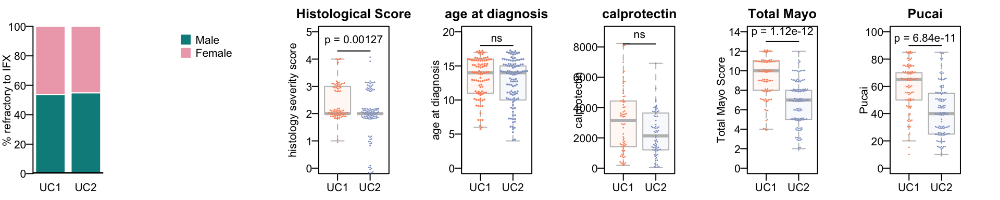
11 Computing differentially expressed genes between UC1 and UC2
set <- ExpressionSet(as.matrix(data)); pData(set) <- phenotData
design <- model.matrix(~UC_subtype)
colnames(design) <- levels(UC_subtype)
fit <- lmFit(set, design)
fit <- contrasts.fit(fit,coefficients = 2)
fit <- eBayes(fit)
top <- topTable(fit,number = "all")
#
# fit <- glmFit(y, design)
# lrt <- glmLRT(fit)
# top <- topTags(lrt,adjust.method = "BH",n = "all",sort.by = "p.value")[[1]]
# colnames(top) <- sub("Groupday","d",colnames(top))
# head(top,50)
pValue <- as.matrix(top)[,"P.Value"]
pValue[pValue==0] <- min(pValue[pValue!=0])
logFC <- as.matrix(top)[,"logFC"]
FDR <- as.matrix(top)[,"adj.P.Val"]
FDR[FDR==0] <- min(FDR[FDR!=0])
pT <- 10
lT <- .7
top_DE <- rownames(top)[ifelse(abs(logFC) < lT,FALSE,ifelse(-log10(FDR) < pT,FALSE,TRUE))]
mypar(1,2)
plot(logFC,-log10(FDR),pch=16,xlim=c(-4,4),col=ifelse(names(logFC) %in% top_DE,"red","black"),cex=.6,yaxs="i",ylim=c(0,max(-log10(FDR))*1.1 ),las=1)
abline(v=c(-lT,lT),h=pT,lty=5,col="grey50")
plot(logFC,-log10(FDR),pch=16,xlim=c(-4,4),col=ifelse(names(logFC) %in% top_DE,"red","black"),cex=.6,yaxs="i",ylim=c(0,max(-log10(FDR))*1.1 ),las=1)
abline(v=c(-lT,lT),h=pT,lty=5,col="grey50")
text(logFC[top_DE],-log10(FDR)[top_DE],top_DE,pos=3,cex=.4)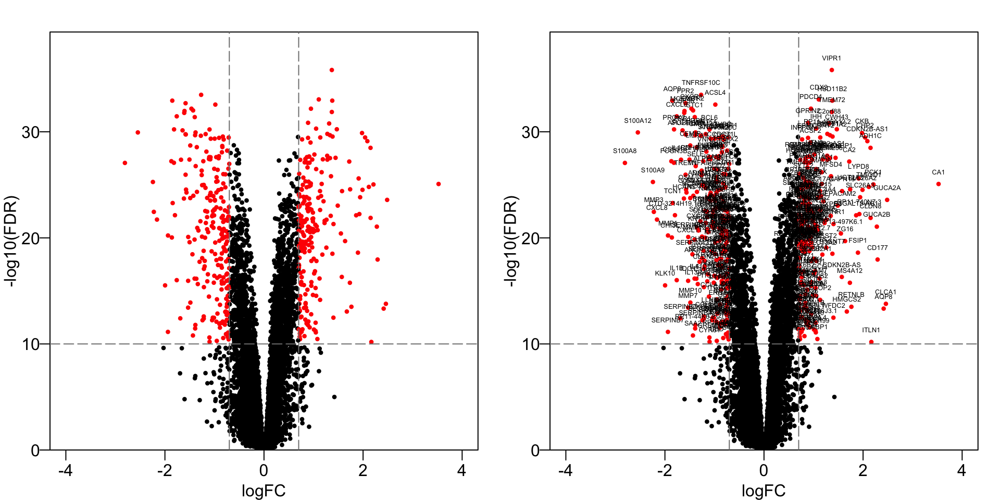
12 Ploting the variance of mouse PC genes in the human dataset
par(mar=c(2,6,3,1),mfrow=c(1,4))
barplot(top_rowVAR[100:1],horiz=T,las=1,col=ifelse(names(top_rowVAR[100:1]) %in% rownames(cPC),"red","grey"),xlim=c(0,max(top_rowVAR[100:1])*1.4),yaxs="i",xaxs="i",main="human rowVar",xlab="variance",border=NA)
legend("bottomright",c("found\nin mouse"),pch = 22,bty = "n",pt.bg = "red",pt.cex = 2)
sum(names(top_rowVAR[100:1]) %in% rownames(cPC))/length(names(top_rowVAR[100:1]))*100
temp <- sort(rowVAR,decreasing = T)
barplot(temp[names(temp) %in% rownames(cPC)][nrow(cPC):1],horiz=T,las=1,col="red",xlim=c(0,max(temp)*1.4),yaxs="i",xaxs="i",main="human rowVar (only mouse genes)",xlab="variance",border=NA)
legend("bottomright",c("found\nin mouse"),pch = 22,bty = "n",pt.bg = "red",pt.cex = 2)
sum(rownames(cPC) %in% top_DE)/length(rownames(cPC))*100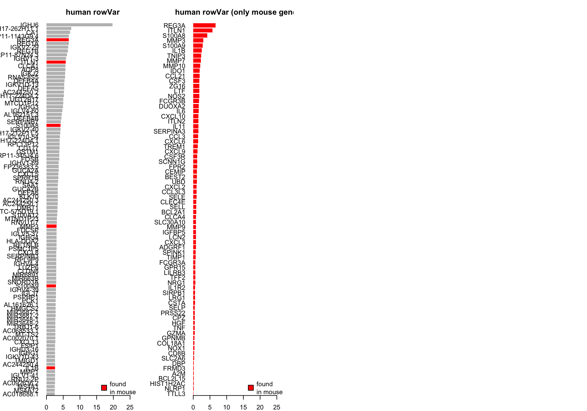
## [1] 6
## [1] 52.702713 Ploting heatmap comparing UC1 vs UC2
mypar()
ann_groups <- data.frame(ann_groups=UC_subtype,row.names=colnames(data))
tag_colors <- pallete[1:length(levels(UC_subtype))]; names(tag_colors) <- unique(ann_groups)[[1]]
o <- order(ann_groups$ann_groups)
pheatmap(data[top_DE,o],col=colorRampPalette(c("navy","navy","white","firebrick","firebrick"))(50),clustering_method = "ward.D2",border_color = NA,scale = "row",annotation_col = as.data.frame(ann_groups), annotation_colors = list(ann_groups = tag_colors),cluster_cols = F,fontsize_row = 5)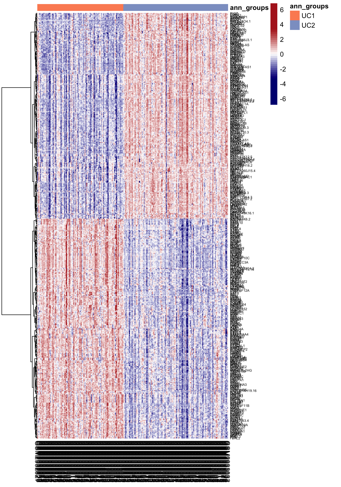
14 Comparison of microarray results to RNAseq results
par(mar=c(2,3,2,2),mfrow=c(1,3))
old <- read.csv("../processed_files/DEGs_UC1_vs_UC2.csv",row.names = 1)
sel <- rownames(old)[ifelse(abs(old$logFC) < lT,FALSE,ifelse(-log10(old$adj.P.Val) < pT,FALSE,TRUE))]
b <- venn(list("RNAseq"=top_DE,"microarray"=sel))
b <- attributes(b)
print(b$intersections$`RNAseq:microarray`)
#Plot association between p-values
plot(1,1,frame.plot=F,xlim=c(0.5,3.5),ylim=c(0,35),las=1,xaxt="n",xlab="",ylab="-log10(FDR)",type="n" )
for (i in b$intersections$`RNAseq:microarray`){
lines(c(1,3),-log10( c(old[i,"adj.P.Val"],top[i,"adj.P.Val"])),col="grey" )
}
points(c(rep(1,length(sel)) ,rep(3,length(top_DE))) ,-log10(c(old[sel,"adj.P.Val"],top[top_DE,"adj.P.Val"])),
col=)
abline(h=4,col="red",lty=2)
mtext(c("microarray\n(n=102)","RNAseq\n(n=206)"),side = 1,at=c(1,3))
#Plot association between fold changes
plot(1,1,frame.plot=F,xlim=c(0.5,3.5),ylim=c(-4,4),las=1,xaxt="n",xlab="",ylab="log2(FC)",type="n" )
for (i in b$intersections$`RNAseq:microarray`){
lines(c(1,3),c(old[i,"logFC"],top[i,"logFC"]),col="grey" )
}
points(c(rep(1,length(sel)) ,rep(3,length(top_DE))) ,c(old[sel,"logFC"],top[top_DE,"logFC"]))
abline(h=c(.6,-.6),col="red",lty=2)
mtext(c("microarray\n(n=102)","RNAseq\n(n=206)"),side = 1,at=c(1,3))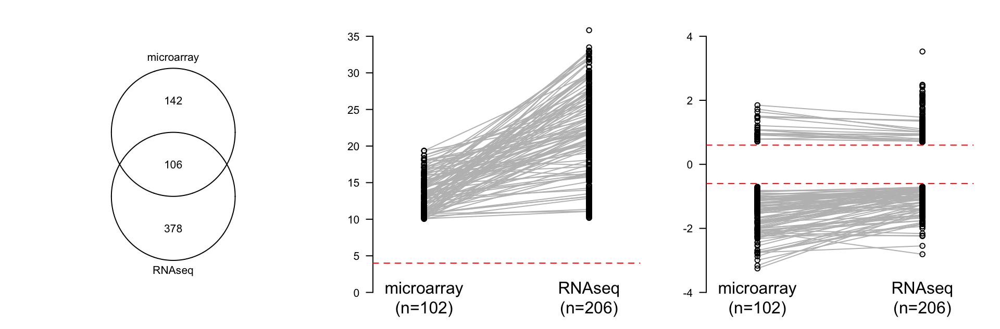
## [1] "CDX2" "HSD11B2" "AQP9" "FPR2" "CXCR1"
## [6] "CXCR2" "MCEMP1" "CSF3R" "CXCL6" "STC1"
## [11] "CWH43" "PROK2" "BCL6" "S100A12" "WNT5A"
## [16] "PLAU" "CMTM2" "THBD" "IL1R1" "ANGPTL2"
## [21] "FAM20C" "DYSF" "SRPX2" "VNN2" "CTSL"
## [26] "EPB41L4B" "LILRB3" "HGF" "IL1RN" "WISP1"
## [31] "CSF3" "S100A8" "SELE" "ICAM1" "ACSL1"
## [36] "CCR1" "TREM1" "TNFAIP6" "SOD2" "S100A9"
## [41] "NCF2" "SATB2" "ITGA5" "G0S2" "TNFRSF11B"
## [46] "ADGRE2" "TNC" "HCAR3" "NAMPT" "CEBPB"
## [51] "LILRA6" "PIGZ" "MNDA" "BCL2A1" "HSPA6"
## [56] "MMP3" "IL18RAP" "PLEK" "NXPE4" "SLC2A3"
## [61] "CD93" "TLR2" "FGR" "CXCL8" "TGFBI"
## [66] "TMEM158" "SOCS3" "C5AR1" "ARHGAP44" "NRARP"
## [71] "TIMP1" "ATP2C2" "SPHK1" "PDE4B" "COL7A1"
## [76] "LILRB2" "WNK4" "MMP1" "PXDN" "SCNN1A"
## [81] "FAP" "FFAR2" "NR3C2" "PTGS2" "BASP1"
## [86] "COL6A3" "IFITM2" "CTHRC1" "NXPE1" "GZMB"
## [91] "COL12A1" "IL6" "IL11" "IL1B" "IL7R"
## [96] "COL4A1" "PTP4A3" "COL4A2" "COL15A1" "GBP5"
## [101] "FAM3D" "MAP2K6" "SELL" "PYY" "C10orf99"
## [106] "COL1A1"15 tSNE gene expression of DEGs between UC1 vs UC2
mypar(1,10,mar = c(0.1,0.1,0.1,0.1))
#Sort genes by absolute fold-change
ordered_list <- sort(logFC[top_DE])
for(i in names(ordered_list)){
grad <- (data[i,] - quantile(data[i,],.05)) / (quantile(data[i,],.95) - quantile(data[i,],.05))
grad[grad < 0] <- 0; grad[grad > 1] <- 1
plot(tSNE$Y[,1],tSNE$Y[,2],cex=1.5,las=1,xaxt="n",yaxt="n",col=colorRampPalette(c("grey90","grey80","navy"))(50)[grad*49+1],pch=as.numeric(UC_subtype)+15,line=.5,xlab="", ylab="",xlim=c(min(tSNE$Y[,1])*out,max(tSNE$Y[,1])*out),ylim=c(min(tSNE$Y[,2])*out,max(tSNE$Y[,2])*out),main=i)
axis(side = 1, labels = FALSE, tck = -0.01);axis(side = 2, labels = FALSE, tck = -0.01)
text(min(tSNE$Y[,1])*out,max(tSNE$Y[,2])*out,i,adj=0,cex=1.5)
abline(c(intercept,slope),lty=2)}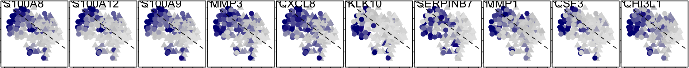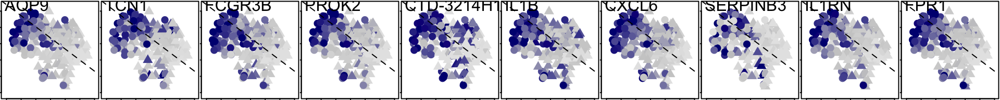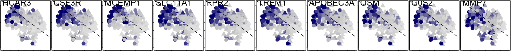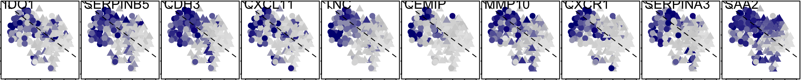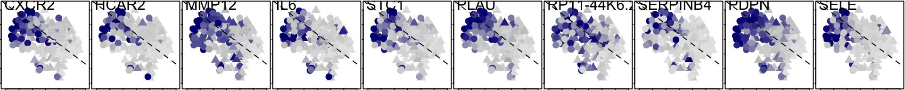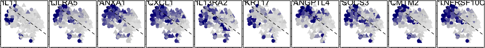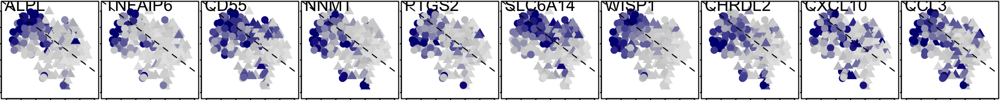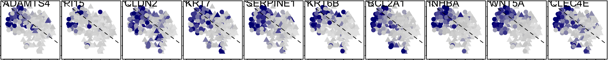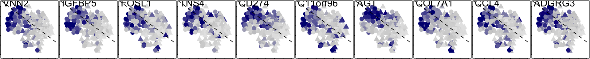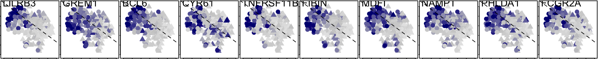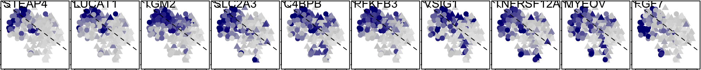 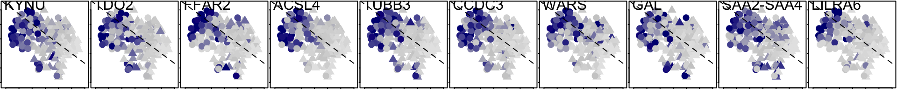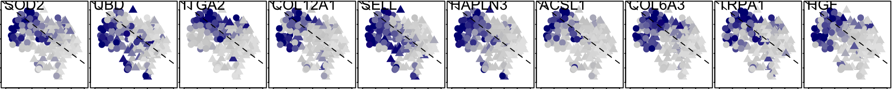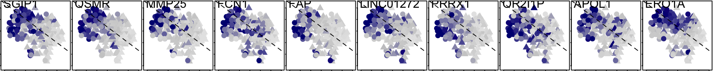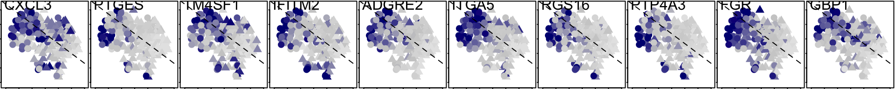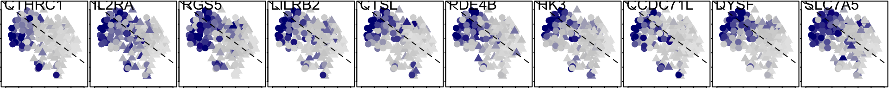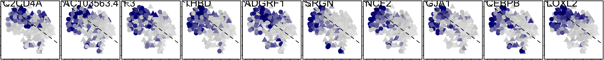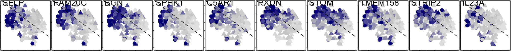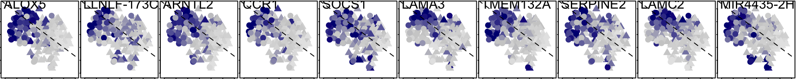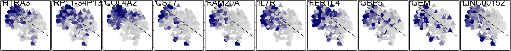
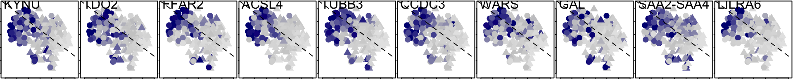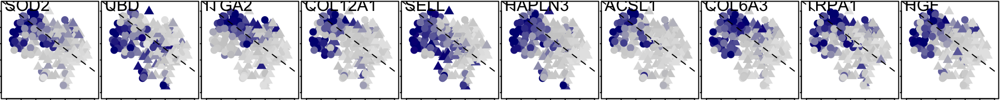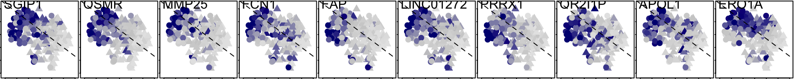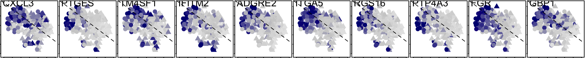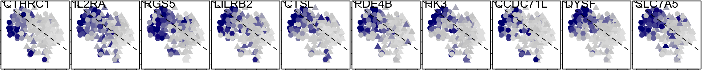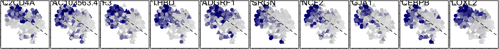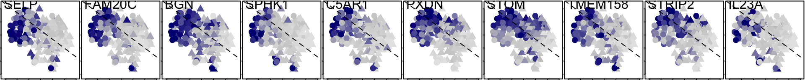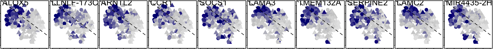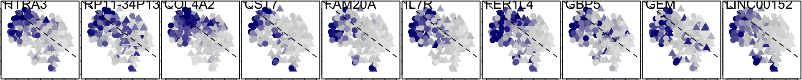 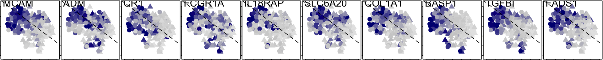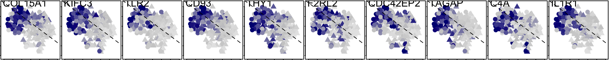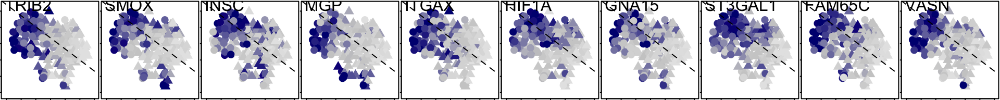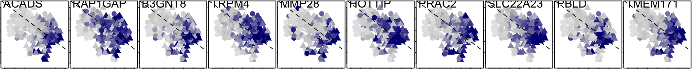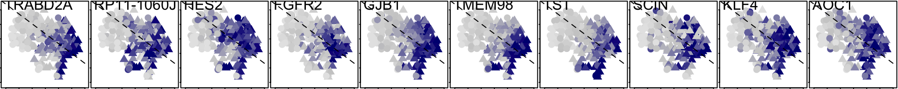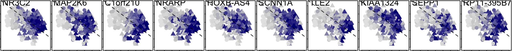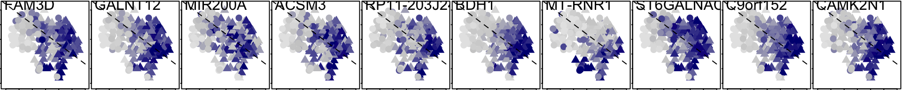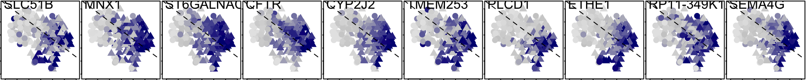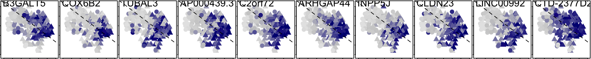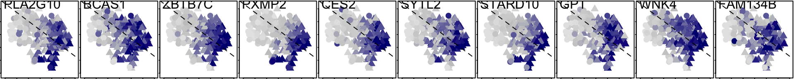
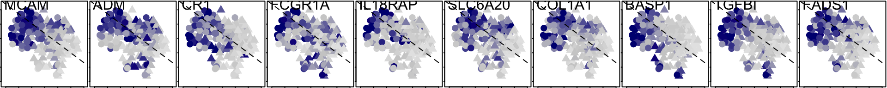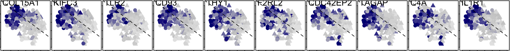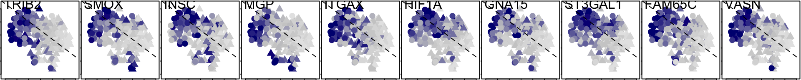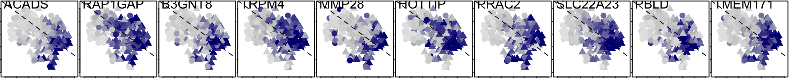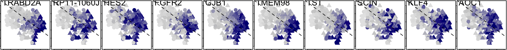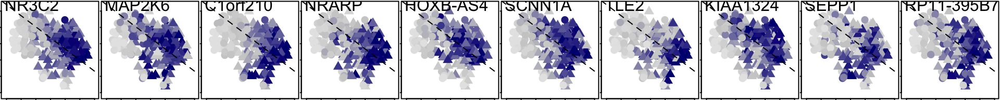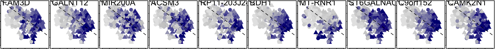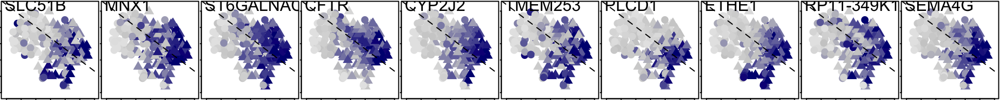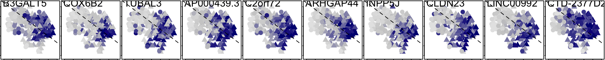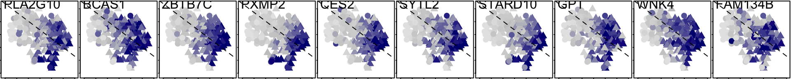
16 ViolinPlot gene expression of DEGs between UC1 vs UC2
mypar(1,8,mar = c(2,2,2,1))
#Sort genes by absolute fold-change
ordered_list <- sort(logFC[top_DE])
for(i in names(ordered_list)){
my_violins(data[i,],UC_subtype,main = i,color = pallete)}